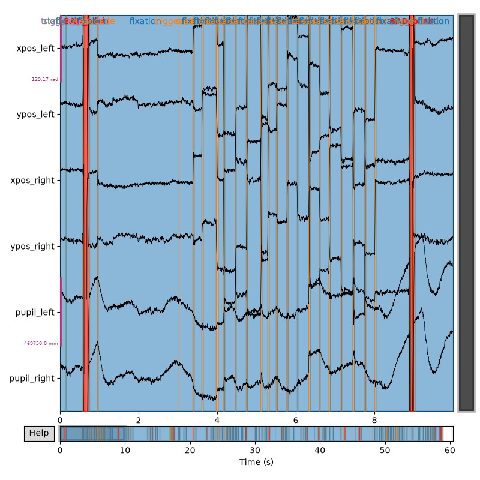

Note
Go to the end to download the full example code.
Convert eyetracking data to BIDS Format#
This example shows how to convert Eyelink eyetracking data to BIDS using MNE-BIDS.
# Authors: The MNE-BIDS developers
# SPDX-License-Identifier: BSD-3-Clause
import json
import shutil
import tempfile
from pathlib import Path
from pprint import pprint
import mne
from mne.datasets import testing
from mne.datasets.eyelink import data_path as eyelink_data_path
from mne.preprocessing.eyetracking import read_eyelink_calibration
from mne_bids import BIDSPath, print_dir_tree, write_raw_bids
Load example eyetracking data#
Here we use an Eyelink file from the MNE-Python testing data.
data_path = testing.data_path(download=False)
eyetrack_fpath = data_path / "eyetrack" / "test_eyelink.asc"
raw = mne.io.read_raw_eyelink(eyetrack_fpath)
cals = read_eyelink_calibration(eyetrack_fpath)
for cal in cals:
cal["screen_origin"] = ["top", "left"]
raw
Loading /home/circleci/mne_data/MNE-testing-data/eyetrack/test_eyelink.asc
Pixel coordinate data detected. Pass `scalings=dict(eyegaze=1e3)` when using plot method to make traces more legible.
Pupil-size diameter detected.
No button events found in this file.
Reading calibration data from /home/circleci/mne_data/MNE-testing-data/eyetrack/test_eyelink.asc
raw.plot(scalings="auto")

For automatic theme detection, "darkdetect" has to be installed! You can install it with `pip install darkdetect`
<MNEBrowseFigure size 800x800 with 4 Axes>
Where are BIDS compliant eyetracking files stored?#
Eyetracking-only data is stored in the 'beh' modality directory. Eyetracking data
that was collected alongside another modality (eeg, meg, etc) will be stored
in the same directory as that modality. When defining a BIDSPath instance to read or
write eyetracking data, pass datatype="beh" for eyetracking-only data, and for
example datatype='eeg' if data were collected simultaneously with EEG data.
Either way, you should also pass suffix="physio", and recording='eye1' to the
BIDSPath constructor (even for binocular data, MNE-BIDS will handle reading and
writing of eye2 data for us.)
Write BIDS eyetracking files#
To write eyetracking BIDS, you need to pass both the Raw object with the eytracking
data, and a Calibration object that
contains necessary metadata about the presentation display used in the experiment.
MNE-BIDS will write one *_physio.tsv.gz + *_physio.json pair per eye,
with matching *_physioevents.tsv.gz files. Additionally, we are going to convert
our eyetracking eyegaze channels from pixels-on-screen to radians-of-visual-angle, to
demonstrate how BIDS stores the units.
cal = cals[0]
cal["screen_resolution"] = (1920, 1080)
cal["screen_size"] = (0.53, 0.3)
cal["screen_distance"] = 0.9
mne.preprocessing.eyetracking.convert_units(raw, calibration=cal, to="radians")
write_raw_bids(
raw=raw,
bids_path=bids_path,
allow_preload=True,
eyetrack_calibration=cals,
overwrite=True,
)
Converted ['xpos_left', 'ypos_left', 'xpos_right', 'ypos_right'] to radians.
Writing eyetracking data to physio.tsv files.
Writing '/tmp/mne_bids_eyetrack_px2sqzgr/sub-01/ses-01/beh/sub-01_ses-01_task-eyetrack_run-01_recording-eye1_physio.tsv.gz'...
Writing '/tmp/mne_bids_eyetrack_px2sqzgr/sub-01/ses-01/beh/sub-01_ses-01_task-eyetrack_run-01_recording-eye1_physio.json'...
Used Annotations descriptions: [np.str_('blink'), np.str_('fixation'), np.str_('saccade')]
Writing '/tmp/mne_bids_eyetrack_px2sqzgr/sub-01/ses-01/beh/sub-01_ses-01_task-eyetrack_run-01_recording-eye1_physioevents.tsv.gz'...
Writing '/tmp/mne_bids_eyetrack_px2sqzgr/sub-01/ses-01/beh/sub-01_ses-01_task-eyetrack_run-01_recording-eye1_physioevents.json'...
Writing '/tmp/mne_bids_eyetrack_px2sqzgr/sub-01/ses-01/beh/sub-01_ses-01_task-eyetrack_run-01_recording-eye2_physio.tsv.gz'...
Writing '/tmp/mne_bids_eyetrack_px2sqzgr/sub-01/ses-01/beh/sub-01_ses-01_task-eyetrack_run-01_recording-eye2_physio.json'...
Used Annotations descriptions: [np.str_('blink'), np.str_('fixation'), np.str_('saccade')]
Writing '/tmp/mne_bids_eyetrack_px2sqzgr/sub-01/ses-01/beh/sub-01_ses-01_task-eyetrack_run-01_recording-eye2_physioevents.tsv.gz'...
Writing '/tmp/mne_bids_eyetrack_px2sqzgr/sub-01/ses-01/beh/sub-01_ses-01_task-eyetrack_run-01_recording-eye2_physioevents.json'...
Writing '/tmp/mne_bids_eyetrack_px2sqzgr/sub-01/ses-01/beh/sub-01_ses-01_task-eyetrack_run-01_recording-eye1_physio.json'...
Writing '/tmp/mne_bids_eyetrack_px2sqzgr/sub-01/ses-01/beh/sub-01_ses-01_task-eyetrack_run-01_recording-eye2_physio.json'...
Writing '/tmp/mne_bids_eyetrack_px2sqzgr/README'...
Writing '/tmp/mne_bids_eyetrack_px2sqzgr/participants.tsv'...
Writing '/tmp/mne_bids_eyetrack_px2sqzgr/participants.json'...
Writing of electrodes.tsv is not supported for data type "beh". Skipping ...
The provided raw data contains annotations, but you did not pass an "event_id" mapping from annotation descriptions to event codes. We will generate arbitrary event codes. To specify custom event codes, please pass "event_id".
Used Annotations descriptions: [np.str_('start/block'), np.str_('trigger: 110'), np.str_('trigger: 116'), np.str_('trigger: 200'), np.str_('trigger: 201'), np.str_('trigger: 202'), np.str_('trigger: 203'), np.str_('trigger: 204'), np.str_('trigger: 211'), np.str_('trigger: 222'), np.str_('trigger: 233')]
Writing '/tmp/mne_bids_eyetrack_px2sqzgr/sub-01/ses-01/beh/sub-01_ses-01_task-eyetrack_run-01_events.tsv'...
Writing '/tmp/mne_bids_eyetrack_px2sqzgr/sub-01/ses-01/beh/sub-01_ses-01_task-eyetrack_run-01_events.json'...
Writing '/tmp/mne_bids_eyetrack_px2sqzgr/dataset_description.json'...
Copying data files to sub-01_ses-01_task-eyetrack_run-01_recording-eye1_physio.tsv.gz
Writing '/tmp/mne_bids_eyetrack_px2sqzgr/sub-01/ses-01/sub-01_ses-01_scans.tsv'...
Wrote /tmp/mne_bids_eyetrack_px2sqzgr/sub-01/ses-01/sub-01_ses-01_scans.tsv entry with beh/sub-01_ses-01_task-eyetrack_run-01_recording-eye1_physio.tsv.gz.
BIDSPath(
root: /tmp/mne_bids_eyetrack_px2sqzgr
datatype: beh
basename: sub-01_ses-01_task-eyetrack_run-01_recording-eye1_physio.tsv.gz)
Inspect the generated BIDS directory tree.
|mne_bids_eyetrack_px2sqzgr/
|--- README
|--- dataset_description.json
|--- participants.json
|--- participants.tsv
|--- sub-01/
|------ ses-01/
|--------- sub-01_ses-01_scans.tsv
|--------- beh/
|------------ sub-01_ses-01_task-eyetrack_run-01_events.json
|------------ sub-01_ses-01_task-eyetrack_run-01_events.tsv
|------------ sub-01_ses-01_task-eyetrack_run-01_recording-eye1_physio.json
|------------ sub-01_ses-01_task-eyetrack_run-01_recording-eye1_physio.tsv.gz
|------------ sub-01_ses-01_task-eyetrack_run-01_recording-eye1_physioevents.json
|------------ sub-01_ses-01_task-eyetrack_run-01_recording-eye1_physioevents.tsv.gz
|------------ sub-01_ses-01_task-eyetrack_run-01_recording-eye2_physio.json
|------------ sub-01_ses-01_task-eyetrack_run-01_recording-eye2_physio.tsv.gz
|------------ sub-01_ses-01_task-eyetrack_run-01_recording-eye2_physioevents.json
|------------ sub-01_ses-01_task-eyetrack_run-01_recording-eye2_physioevents.tsv.gz
Inspect one sidecar JSON file.#
Notice 1) that the calibration information was written to this physio.json file, and
2) that the units for the eyegaze channels are 'rad', meaning “radians of visual
angle.”
eye1_json = bids_path.fpath.with_suffix("").with_suffix(".json")
print(f"Filepath: {eye1_json}")
pprint(json.loads(eye1_json.read_text()), indent=2)
Filepath: /tmp/mne_bids_eyetrack_px2sqzgr/sub-01/ses-01/beh/sub-01_ses-01_task-eyetrack_run-01_recording-eye1_physio.json
{ 'AverageCalibrationError': 0.3,
'CalibrationCount': 1,
'CalibrationDistance': 0.9,
'CalibrationPosition': [ [960.0, 540.0],
[960.0, 92.0],
[960.0, 987.0],
[115.0, 540.0],
[1804.0, 540.0],
[216.0, 145.0],
[1703.0, 145.0],
[216.0, 934.0],
[1703.0, 934.0],
[537.0, 316.0],
[1382.0, 316.0],
[537.0, 763.0],
[1382.0, 763.0]],
'CalibrationType': 'HV13',
'Columns': ['timestamp', 'x_coordinate', 'y_coordinate', 'pupil_size'],
'MaximalCalibrationError': 0.9,
'PhysioType': 'eyetrack',
'RecordedEye': 'left',
'SampleCoordinateSystem': 'gaze-on-screen',
'SamplingFrequency': 500.0,
'StartTime': 0.0,
'pupil_size': { 'Description': 'Pupil size of the recorded eye',
'Units': 'arbitrary'},
'timestamp': { 'Description': 'The timestamp of the data, in seconds.',
'Units': 's'},
'x_coordinate': { 'Description': 'The x-coordinate of the gaze on the '
'screen.',
'Units': 'rad'},
'y_coordinate': { 'Description': 'The y-coordinate of the gaze on the '
'screen.',
'Units': 'rad'}}
Convert simultaneous EEG + eyetracking data to BIDS#
When eyetracking data is collected simultaneously with another BIDS modality, then the
eyetracking files will be written to that modality folder. In other words, instead of
being written to a beh directory, as the stand-alone eyetracking data that we just
used was, the dataset below will be written alongside the EEG data in the 'eeg'
directory. Additionally, unlike the previous example, where we converted our eyegaze
channel units from pixels-on-screen to radians-of-visual-angle, in this example we’ll
keep the data as pixels-on-screen, and this will be reflected in the BIDS metadata.
eyelink_root = eyelink_data_path()
et_fpath = eyelink_root / "eeg-et" / "sub-01_task-plr_eyetrack.asc"
eeg_fpath = eyelink_root / "eeg-et" / "sub-01_task-plr_eeg.mff"
cals = mne.preprocessing.eyetracking.read_eyelink_calibration(et_fpath)
cals[0]["screen_origin"] = ["top", "left"]
cals[0]["screen_resolution"] = (1920, 1080)
cals[0]["screen_size"] = (0.53, 0.3)
cals[0]["screen_distance"] = 0.9
raw_et = mne.io.read_raw_eyelink(et_fpath)
raw_eeg = mne.io.read_raw_egi(eeg_fpath, events_as_annotations=True).load_data()
Using default location ~/mne_data for eyelink...
Fetching 1 file for the eyelink dataset ...
0%| | 0.00/112M [00:00<?, ?B/s]
1%|▌ | 1.52M/112M [00:00<00:07, 15.2MB/s]
3%|█▎ | 3.70M/112M [00:00<00:05, 19.0MB/s]
5%|█▉ | 5.87M/112M [00:00<00:05, 20.3MB/s]
7%|██▋ | 8.03M/112M [00:00<00:05, 20.8MB/s]
9%|███▍ | 10.2M/112M [00:00<00:04, 21.1MB/s]
11%|████▏ | 12.4M/112M [00:00<00:04, 21.4MB/s]
13%|████▉ | 14.6M/112M [00:00<00:04, 21.5MB/s]
15%|█████▋ | 16.7M/112M [00:00<00:04, 21.6MB/s]
17%|██████▍ | 18.9M/112M [00:00<00:04, 21.7MB/s]
19%|███████▏ | 21.1M/112M [00:01<00:04, 21.7MB/s]
21%|███████▉ | 23.3M/112M [00:01<00:04, 21.6MB/s]
23%|████████▋ | 25.5M/112M [00:01<00:03, 21.7MB/s]
25%|█████████▎ | 27.7M/112M [00:01<00:03, 21.7MB/s]
27%|██████████ | 29.8M/112M [00:01<00:03, 21.8MB/s]
29%|██████████▊ | 32.0M/112M [00:01<00:03, 21.8MB/s]
30%|███████████▌ | 34.2M/112M [00:01<00:03, 21.8MB/s]
32%|████████████▎ | 36.4M/112M [00:01<00:03, 21.2MB/s]
34%|█████████████ | 38.5M/112M [00:01<00:03, 20.8MB/s]
36%|█████████████▋ | 40.6M/112M [00:01<00:03, 20.6MB/s]
38%|██████████████▍ | 42.6M/112M [00:02<00:03, 20.6MB/s]
40%|███████████████▏ | 44.7M/112M [00:02<00:03, 20.6MB/s]
42%|███████████████▊ | 46.8M/112M [00:02<00:03, 20.6MB/s]
44%|████████████████▌ | 48.8M/112M [00:02<00:03, 20.5MB/s]
45%|█████████████████▏ | 50.9M/112M [00:02<00:02, 20.5MB/s]
47%|█████████████████▉ | 52.9M/112M [00:02<00:02, 20.5MB/s]
49%|██████████████████▌ | 55.0M/112M [00:02<00:02, 20.5MB/s]
51%|███████████████████▎ | 57.0M/112M [00:02<00:02, 20.4MB/s]
53%|████████████████████ | 59.1M/112M [00:02<00:02, 20.4MB/s]
54%|████████████████████▋ | 61.1M/112M [00:02<00:02, 20.4MB/s]
56%|█████████████████████▍ | 63.2M/112M [00:03<00:02, 20.4MB/s]
58%|██████████████████████ | 65.2M/112M [00:03<00:02, 20.4MB/s]
60%|██████████████████████▊ | 67.3M/112M [00:03<00:02, 20.4MB/s]
62%|███████████████████████▍ | 69.3M/112M [00:03<00:02, 20.4MB/s]
64%|████████████████████████▏ | 71.3M/112M [00:03<00:02, 20.4MB/s]
65%|████████████████████████▊ | 73.4M/112M [00:03<00:01, 20.4MB/s]
67%|█████████████████████████▌ | 75.4M/112M [00:03<00:01, 20.4MB/s]
69%|██████████████████████████▏ | 77.5M/112M [00:03<00:01, 20.4MB/s]
71%|██████████████████████████▉ | 79.5M/112M [00:03<00:01, 20.4MB/s]
73%|███████████████████████████▌ | 81.5M/112M [00:03<00:01, 20.2MB/s]
74%|████████████████████████████▎ | 83.6M/112M [00:04<00:01, 20.1MB/s]
76%|████████████████████████████▉ | 85.6M/112M [00:04<00:01, 20.0MB/s]
78%|█████████████████████████████▋ | 87.6M/112M [00:04<00:01, 19.9MB/s]
80%|██████████████████████████████▎ | 89.6M/112M [00:04<00:01, 19.4MB/s]
82%|██████████████████████████████▉ | 91.5M/112M [00:04<00:01, 19.3MB/s]
83%|███████████████████████████████▋ | 93.6M/112M [00:04<00:00, 19.7MB/s]
85%|████████████████████████████████▍ | 95.7M/112M [00:04<00:00, 20.1MB/s]
87%|█████████████████████████████████ | 97.8M/112M [00:04<00:00, 20.4MB/s]
89%|██████████████████████████████████▋ | 100M/112M [00:04<00:00, 20.7MB/s]
91%|███████████████████████████████████▍ | 102M/112M [00:04<00:00, 20.5MB/s]
93%|████████████████████████████████████▏ | 104M/112M [00:05<00:00, 19.5MB/s]
94%|████████████████████████████████████▊ | 106M/112M [00:05<00:00, 17.9MB/s]
96%|█████████████████████████████████████▍ | 108M/112M [00:05<00:00, 17.4MB/s]
98%|██████████████████████████████████████▏| 110M/112M [00:05<00:00, 18.3MB/s]
100%|██████████████████████████████████████▉| 112M/112M [00:05<00:00, 19.1MB/s]
0%| | 0.00/112M [00:00<?, ?B/s]
100%|████████████████████████████████████████| 112M/112M [00:00<00:00, 512GB/s]
/home/circleci/project/examples/convert_eyetracking_to_bids.py:137: RuntimeWarning: Setting non-standard config type: "MNE_DATASETS_EYELINK_PATH"
eyelink_root = eyelink_data_path()
Download complete in 08s (107.0 MB)
Reading calibration data from /home/circleci/mne_data/MNE-eyelink-data/eeg-et/sub-01_task-plr_eyetrack.asc
Loading /home/circleci/mne_data/MNE-eyelink-data/eeg-et/sub-01_task-plr_eyetrack.asc
Pixel coordinate data detected. Pass `scalings=dict(eyegaze=1e3)` when using plot method to make traces more legible.
Pupil-size area detected.
Found 64 button event(s) in this file.
No button events found in this file.
There are 2 recording blocks in this file. Times between blocks will be annotated with BAD_ACQ_SKIP.
Found 32 button press events.
Reading EGI MFF Header from /home/circleci/mne_data/MNE-eyelink-data/eeg-et/sub-01_task-plr_eeg.mff...
Reading events ...
Assembling measurement info ...
Excluding events {} ...
Reading 0 ... 190020 = 0.000 ... 190.020 secs...
categories.xml not found or of wrong type. `Epoch.name` will default to "epoch" for all epochs.
Interpolate NaN blink periods prior to merging with EEG data
mne.preprocessing.eyetracking.interpolate_blinks(
raw_et, buffer=(0.05, 0.2), interpolate_gaze=True
)
Interpolating missing data during blinks...
Interpolated 3 channels: ['xpos_right', 'ypos_right', 'pupil_right']
Removing 'BAD_' from BAD_blink.
Merge with EEG data
et_events = mne.find_events(raw_et, min_duration=0.01, shortest_event=1, uint_cast=True)
eeg_events = mne.find_events(raw_eeg, stim_channel="DIN3")
# Convert event onsets from samples to seconds
et_flash_times = et_events[:, 0] / raw_et.info["sfreq"]
eeg_flash_times = eeg_events[:, 0] / raw_eeg.info["sfreq"]
# Align the data
mne.preprocessing.realign_raw(
raw_et, raw_eeg, et_flash_times, eeg_flash_times, verbose="error"
)
Finding events on: DIN
16 events found on stim channel DIN
Event IDs: [2]
Finding events on: DIN3
16 events found on stim channel DIN3
Event IDs: [1]
Add EEG channels to the eye-tracking raw object
raw_et.add_channels([raw_eeg], force_update_info=True)
del raw_eeg # free up some memory
Write the merged EEG + eyetracking recording.
bids_root_simultaneous = Path(tempfile.mkdtemp(prefix="mne_bids_eyetrack_eeg_"))
bids_path_eeg = BIDSPath(
root=bids_root_simultaneous,
subject="01",
session="01",
run="01",
task="plr",
datatype="eeg",
suffix="eeg",
)
write_raw_bids(
raw_et,
bids_path_eeg,
allow_preload=True,
format="BrainVision",
eyetrack_calibration=cals,
verbose="error",
)
/home/circleci/mne_bids_env/lib/python3.13/site-packages/pybv/io.py:687: UserWarning: Encountered unsupported non-voltage units: n/a
Note that the BrainVision format specification supports only µV.
warn(msg)
BIDSPath(
root: /tmp/mne_bids_eyetrack_eeg_x2np78o1
datatype: eeg
basename: sub-01_ses-01_task-plr_run-01_eeg.vhdr)
Inspect the generated dataset. Besides EEG files, MNE-BIDS will create
eyetracking *_physio files in the same modality folder.
|mne_bids_eyetrack_eeg_x2np78o1/
|--- README
|--- dataset_description.json
|--- participants.json
|--- participants.tsv
|--- sub-01/
|------ ses-01/
|--------- sub-01_ses-01_scans.tsv
|--------- eeg/
|------------ sub-01_ses-01_task-plr_run-01_channels.tsv
|------------ sub-01_ses-01_task-plr_run-01_eeg.eeg
|------------ sub-01_ses-01_task-plr_run-01_eeg.json
|------------ sub-01_ses-01_task-plr_run-01_eeg.vhdr
|------------ sub-01_ses-01_task-plr_run-01_eeg.vmrk
|------------ sub-01_ses-01_task-plr_run-01_events.json
|------------ sub-01_ses-01_task-plr_run-01_events.tsv
|------------ sub-01_ses-01_task-plr_run-01_recording-eye1_physio.json
|------------ sub-01_ses-01_task-plr_run-01_recording-eye1_physio.tsv.gz
|------------ sub-01_ses-01_task-plr_run-01_recording-eye1_physioevents.json
|------------ sub-01_ses-01_task-plr_run-01_recording-eye1_physioevents.tsv.gz
Again, let’s inspect the saved metadata for one eye. Note that the units for our eyegaze channels are ‘pixel’, meaning these data are ‘pixel-on-screen’ coordinates.
eye1_json = bids_path_eeg.find_matching_sidecar(suffix="physio", extension=".json")
print(f"Filepath: {eye1_json}")
pprint(json.loads(eye1_json.read_text()), indent=2)
shutil.rmtree(bids_root)
shutil.rmtree(bids_root_simultaneous)
Filepath: /tmp/mne_bids_eyetrack_eeg_x2np78o1/sub-01/ses-01/eeg/sub-01_ses-01_task-plr_run-01_recording-eye1_physio.json
{ 'AverageCalibrationError': 0.71,
'CalibrationCount': 1,
'CalibrationDistance': 0.9,
'CalibrationPosition': [ [960.0, 540.0],
[960.0, 92.0],
[960.0, 987.0],
[288.0, 540.0],
[1631.0, 540.0]],
'CalibrationType': 'HV5',
'Columns': ['timestamp', 'x_coordinate', 'y_coordinate', 'pupil_size'],
'MaximalCalibrationError': 0.99,
'PhysioType': 'eyetrack',
'RecordedEye': 'right',
'SampleCoordinateSystem': 'gaze-on-screen',
'SamplingFrequency': 1000.0,
'StartTime': 0.0,
'pupil_size': { 'Description': 'Pupil size of the recorded eye',
'Units': 'arbitrary'},
'timestamp': { 'Description': 'The timestamp of the data, in seconds.',
'Units': 's'},
'x_coordinate': { 'Description': 'The x-coordinate of the gaze on the '
'screen.',
'Units': 'pixel'},
'y_coordinate': { 'Description': 'The y-coordinate of the gaze on the '
'screen.',
'Units': 'pixel'}}
Total running time of the script: (0 minutes 25.282 seconds)